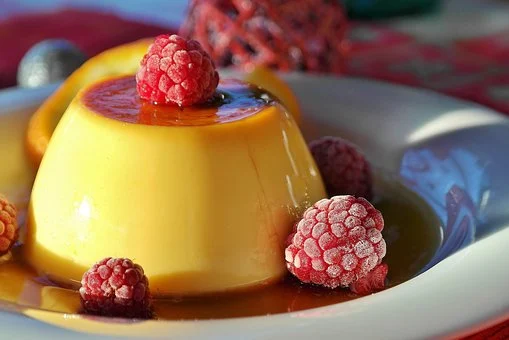

Pudim de leite
Ingredientes:
Massa
- 1 lata de leite condensado
- 1 xícara de leite
- 4 ovos inteiros
- 1 xícara (chá) de açúcar
- 1/3 de xícara (chá) de água
Modo de preparo:
Calda:
- Em uma panela, misture a água e o açúcar até formar uma calda.
- Unte uma forma com a calda e reserve.
- Bata todos os ingredientes no liquidificador e despeje na forma caramelizada.
- Leve para assar em banho-maria por 40 minutos.
- Desenforme e sirva.